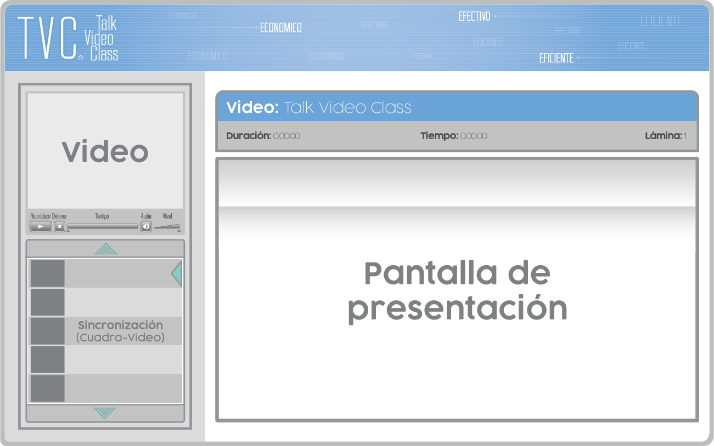

TALK VIDEO CLASS
El TVC es una presentación que puede verse a través de un cd o en línea e incluye textos, esquemas, gráficos, fotografías, sonidos, animaciones y videos. TVC le permite visualizar y escuchar al moderador de la charla o clase mediante una pantalla alojada dentro de la presentación, haciendo que esta sea más elocuente, brindándole al usuario una sensación presencial del tutor, el usuario puede parar, pausar y repetir el material tantas veces como este lo desee, debido a la sincronización cuadro/video que le ayuda a retroceder o adelantar según su criterio, temas, conceptos y capítulos.
